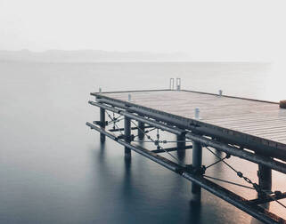

5 day Forecast
Events
With Summer just around the corner, it’s time to break out the fishing gear and hit the lake. Before you
set off on your fishing adventure, you’ll need to be equipped with the right equipment and bait. Make
sure to check the local regulations for the lake you’re visiting to ensure you’re using legal bait. Here
are six of the most common bait choices for fishing in freshwater lakes, brought to you by the friendly
folks at ASO Mammoth, your year-round one-stop shop for everything from fishing equipment and licenses
to mountain biking gear and Mammoth ski rentals.
Leeches are an ideal choice if you’re aiming to
catch walleye or northern pike. Leeches have suckers at each end, and the hook should go through the
sucker. Because leeches are readily available at most bait shops, they’re easy to find and use in many
freshwater lake locations.
Minnows, these baby fish are the quintessential freshwater bait. Minnows come
in a variety of sizes, making it important to choose the right size for the fish you’re aiming to catch.
For example, larger minnows are best suited for bass and pike fishing. The minnow should be hooked
vertically through the tail or through the lips. Because the minnow should keep moving on its own, it’s
important to take care to not hook it through the spinal cord. Insects can be purchased at most bait
shops or caught on your own. The best insects to consider include beetles, grasshoppers, ants, crickets,
and caterpillars. These types of bugs are most likely to attract trout or sunfish.
Contact Information
Bear Lake
Fish Haven, ID 83287
Phone: (208) 852-5555
Fax: (208) 852-6666
Email:info@fishhaven.us